Making a visual novel with Cyberdeck
Write your story as you would in Word, with a few notes in brackets for the stage. Cyberdeck turns it into pages, characters and choices. Your players play it in Datajack.
The basics
1. Create a project
A project holds one whole game: its chapters, characters, pictures and music. On the first screen, type the name of your game, then press Create. The language it is written in comes with its first text.
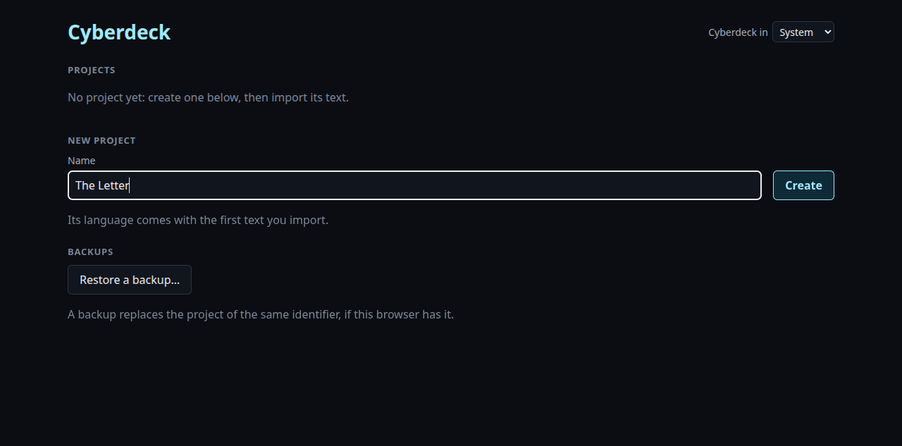
Cyberdeck saves everything as you go: there is no Save button to remember.
Cyberdeck speaks English and French. It follows your computer's language; the Cyberdeck in menu, on this screen or at the top of a project, changes it. Your players choose theirs in Datajack.
2. Write or paste your story
A new project opens on the Import tab. Paste your text there, or press
Open a document… to read a Word (.docx) or text file. To see how it works
first, press Use the sample story.
No text yet? Start without a text opens an empty chapter in the storyboard, where you write it page by page. More chapters and scenes come from New chapter and New scene, on the story's level of the Storyboard.
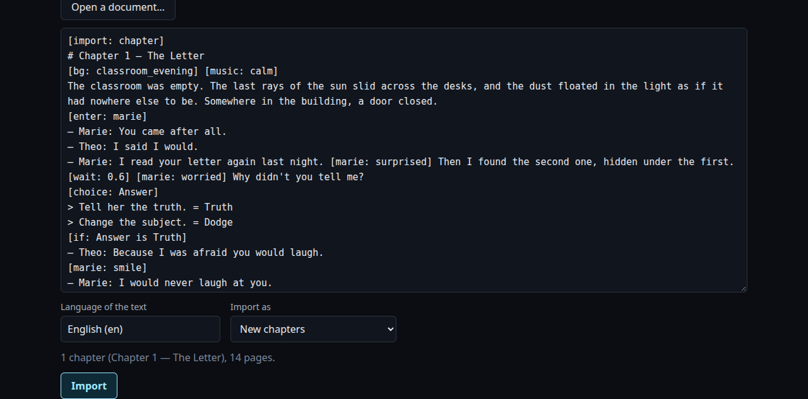
The rules are few:
| You write | It becomes |
|---|---|
| A paragraph | Narration. |
— Marie: You came after all. | Marie speaks. Dialogue always starts with a dash, then the name, then a colon. |
— ???: Who's there? | A voice nobody knows yet. |
# Chapter 1 — The Letter | A new chapter, with its title. |
[something in brackets] | A note for the stage or the story, never shown as text. |
You don't have to cut your text into pages. A page holds two lines, and Cyberdeck cuts long paragraphs by itself, between sentences when it can.
Import as, under the text, says where it goes: New chapters after those you have, Pages at the end of a chapter to continue one, or In place of a chapter to replace one with a new version. Cyberdeck picks the right one by itself most of the time; you only change it to continue a chapter.
Press Import. Your chapter appears in the Storyboard, on the story's own level: every chapter as a card, in the order they are played. Click one and its panel moves, renames, removes, exports or plays it; Enter opens it.
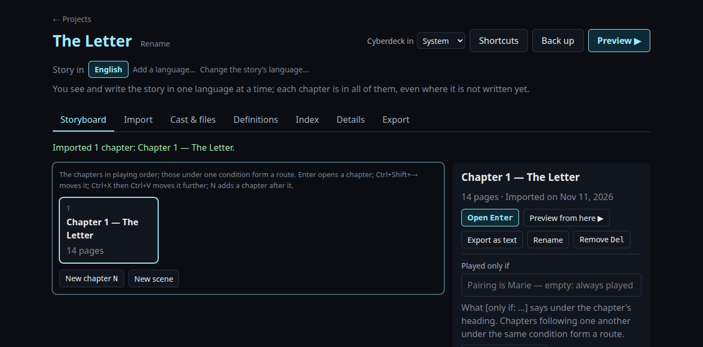
3. Set the stage
Brackets tell the stage what to do. A bracket alone on its line applies when the next page appears; one inside a sentence applies when the text reaches it.
[bg: classroom_evening] [music: calm] The classroom was empty. [enter: marie] — Marie: I read your letter. [marie: surprised] Then I found the second one. [exit: marie]
| You write | What happens |
|---|---|
[bg: rooftop] | The background changes. |
[music: calm], [music: stop] | A track plays in a loop, or stops. |
[enter: marie] | Marie walks in. The first character stands on the left, the second on the right, the third in the middle. |
[marie: smile] | Marie changes expression. |
[exit: marie] | Marie leaves. |
[wait: 0.5] | The text pauses for half a second, and so do the tags after it. |
You never need to declare a character, a background or a track: naming it in the text creates it. If you
mistype a word Cyberdeck knows, like [backgound: …], it tells you instead of creating a
character called “Backgound”.
4. Add pictures and music
In Cast & files, drop your images and sounds, or click to choose them. Each file goes where its name says:
| File | Goes to |
|---|---|
rooftop.jpg | The background “rooftop” |
marie.png | Marie's “normal” expression, the one she enters with |
marie-smile.png | Marie's “smile” expression |
calm.mp3 | The track “calm” |
opening.webm | The video “opening” (.webm or .mp4) |
opening.vtt | Its captions, for players who want them |
Capitals, spaces, hyphens and underscores don't matter. Dropping a new file replaces the old one. A
.zip holding all your files can be dropped as it is: it goes in as if you had unzipped it.
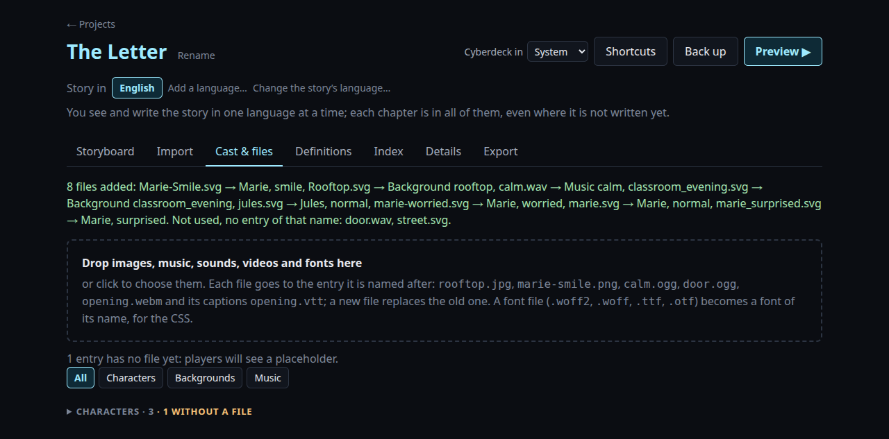
Anything still without a file shows as a grey placeholder, so you can write first and draw later.
5. Play it
Preview ▶, at the top right, plays your game exactly as players will see it. Press Esc to come back.
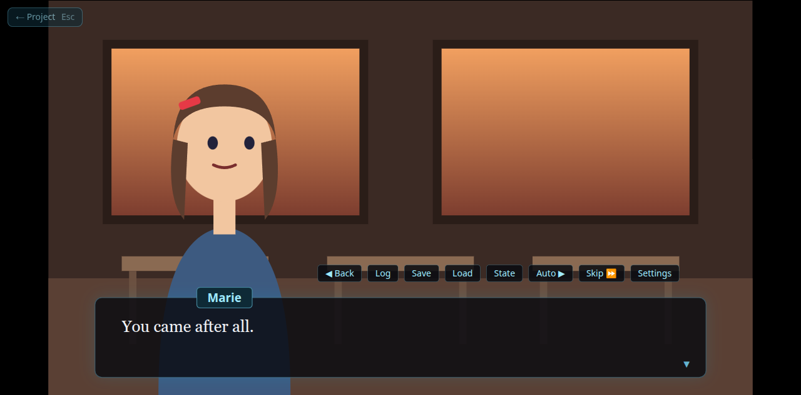
| To | Press |
|---|---|
| Go on | Space, Enter or a click |
| Go back | ← or the mouse wheel up |
| Read what came before | L (the log) |
| Hide the text to see the picture | H or a right click |
| Skip what you have already read | S |
| Settings: text speed, volumes, keys | O |
In Accessibility, Motion follows the system's wish for less motion unless
the player chooses: with less, animated pictures stand still, pictures change without turning, the
name plate jumps, [shake] does nothing and [flash] is a soft glow.
6. Your story as cards
Open a chapter, and the Storyboard shows it as cards, read left to right and top to bottom. Each card is a page; the small ◧ and its number say how many stage notes come with it. Esc, or ↑ Story, goes back up to every chapter.
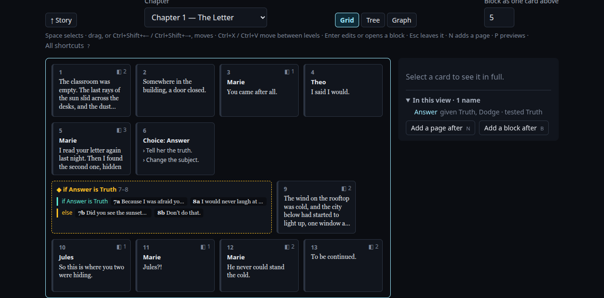
Click a card to see it in full on the right. Then:
- Enter edits it, as the text you would import;
- N writes new pages after it;
- P plays the game from there;
- drag cards to move them, and Delete removes them. Ctrl+Z undoes.
Everything also works without a mouse: the arrows move around, Space selects, and Ctrl+Shift+arrows move what is selected.
A block, an [if] or a [loop], is one card in the grid. B adds a new one,
ready for its condition; on a block, Enter opens it to work on its pages, and E edits its
own text, its conditions and branches.
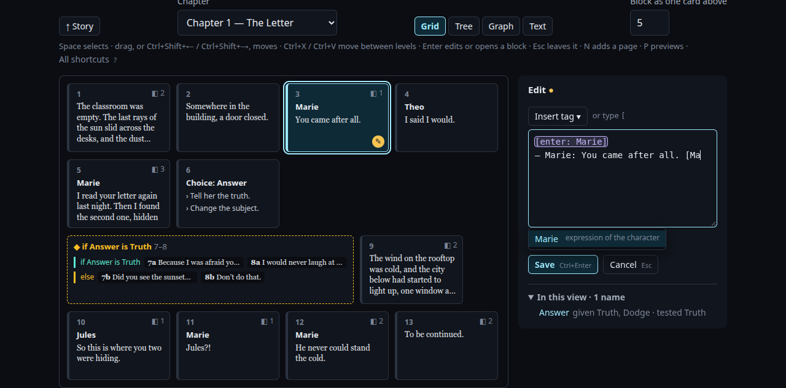
[ suggests what can go there.A note in brackets is one piece: Backspace removes it whole, and the arrows step over it. To change what it says from the keyboard, Alt+← or Alt+→ steps into it.
While editing, Insert tag lists every kind of note, if you'd rather pick than type. Ctrl+Enter saves, Esc cancels. The card you are editing is marked ✎, and nothing you wrote is lost by accident: opening another card, another chapter or another tab first asks whether to Save, Discard or Keep editing.
Typing on the keyboard after clicking elsewhere? Alt+G brings you back to the cards, on what you had selected. While editing a page, it jumps between the text and its card. Alt+Page Down and Alt+Page Up go from tab to tab.
In a narrow window, the panel slides in from the right edge when you click a card or edit one; its handle, or Alt+P, puts it away.
7. Choices and branches
A choice gives a decision a value. Later, the story can depend on it:
[choice: Answer] > Tell her the truth. = Truth > Change the subject. = Dodge [if: Answer is Truth] — Theo: Because I was afraid you would laugh. [else] — Theo: Did you see the sunset? [end] The wind on the rooftop was cold.
Each > line is an option: what the player reads, then = and the value it
gives. Between [if: …] and [end] is what plays only in that case;
[else] is for every other case, and [else if: …] tests something else. After
[end], everyone reads the same story again.
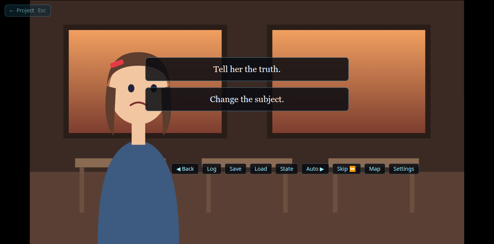
In the storyboard, an [if] is one block. Double-click it, or press Enter, to open
it and see each branch on its own line. Esc goes back up.
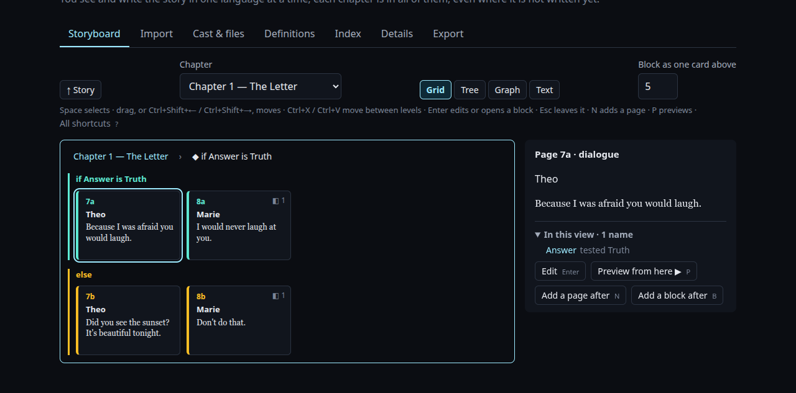
Conditions can combine: [if: Answer is Truth and Mood is not Angry], or with
or.
8. Share your game
In Details, add a description, credits and a cover picture: players see them in their
library. A picture named cover, dropped in Cast & files with the others, becomes the cover
by itself if you have none yet. Then, in Export, give the release a name and press Export. You get
one .zip file: that is your game.
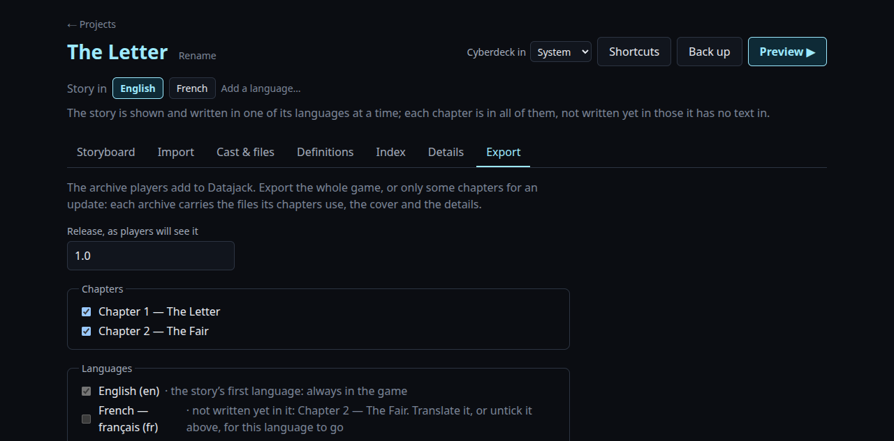
Players open Datajack, press Add a game… (or drop the file on it), and play.
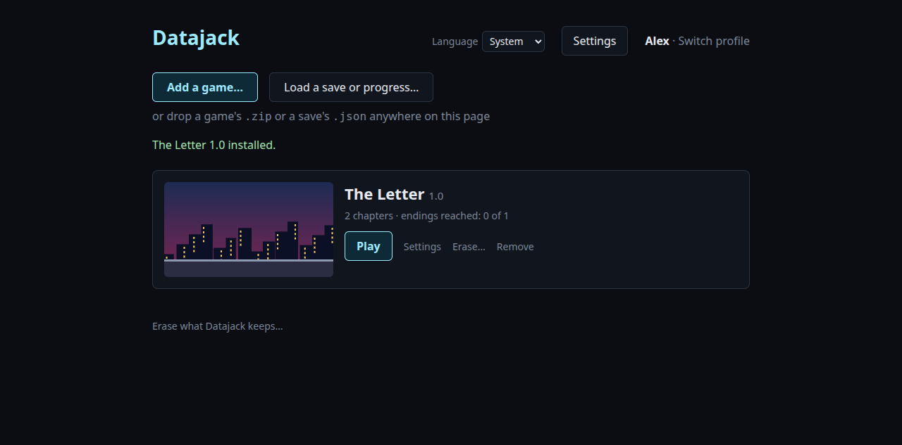
Writing chapter by chapter? Tick only the new chapters to make a small update. Players add it like a game,
and it joins the one they have, their saves kept. Players see how many chapters their game lacks; you can also show their titles, if those give nothing
away, or say nothing of them, for a story still being written or kept a mystery.
At the last chapter they have, the game says To be continued…, or what you wrote with
[to be continued: Marie's story goes on next month.], the last one they passed: near the top
for the whole story, inside a route for that route.
Going further
9. When the import finds a problem
Cyberdeck checks your text as you type, and lists what is wrong with its line number. An error must be fixed before importing; a warning only points out something that looks odd.
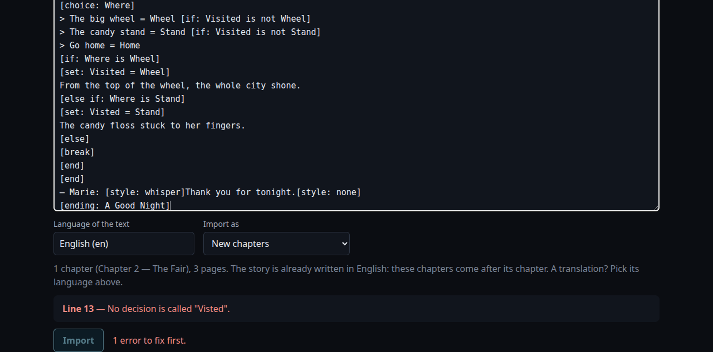
It also tells you about pages nobody can reach (every path before them has ended) and loops with no way out. In the storyboard, such pages are faded, and the blocks holding them say so.
10. Endings, and what players remember
[ending: Alone]
The story ends there, with that name on the end screen. Players see how many of your endings they have
found. A branch that ends stops there; one that doesn't carries on after its [end]. So
several branches can share one ending: just write it after the block.
[remember: The ghost's name] … [if: remembered The ghost's name] — Marie: I know who you are. [end]
Unlike decisions, what a player remembers stays across every new playthrough: for a story
that knows you have been there before. [if: seen ending Alone] works the same way.
[forget: The ghost's name] takes it away again, for good.
A counter or a decision can last too: [counter lasting: Coins = 0], or [decision multi
lasting: Bag = Key | Lamp]. In a playthrough it behaves as any other, going back included, and the next
playthrough starts with what the last one left. Use [remember] for what the game knows, whatever
the player takes back; a lasting value for what the player carries.
Previews remember too, as players do. To try the story again from a clean start, the projects page has Erase what Cyberdeck keeps…: erasing the saves and progress of the previews leaves your projects alone.
To try a branch without playing all the way to it, open State in the preview and change what you need: a decision, a counter, or what the player remembers, as if it were their second time. What follows reads the new values. The preview has the Map too, from its first page, as players see it: the routes you have tried, and a choice to preview from again. Every path draws the map of the whole story instead, every option taken, so that you can check where each one leads without playing them all. A choice a loop asks again comes after the first, so that every line goes forward; an option only other values open has its own ▶, which previews from a path where it is offered.
Players can see some of this in their Journal, but only what you choose:
[shown: Bag, Coins] [shown after an ending: Trust, endings reached]
A decision shows while it holds something, a bag each item until it is taken away; a counter its
number; endings reached the endings found. The second line waits until the player has reached
an ending, for those hunting the others. Write these lines with your definitions, or choose in the Index,
on a decision or a counter: In the players’ journal, and for the endings, at the top of
the Index. Players read the names and values as you wrote them, in every language.
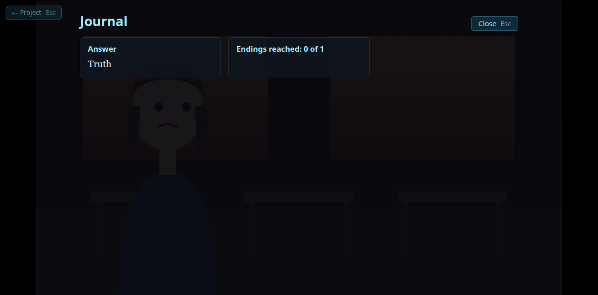
11. More about decisions, and counters
Until a choice sets it, a decision has no value: [if: Answer is Truth] is false, and
[if: Answer is not Truth] is true. A new playthrough starts with none.
A decision normally holds one value, each new one replacing the last. To collect several, such as clues
found or places visited, declare it with multi:
[decision multi: Clues = Letter | Key] [set: Clues = Letter] … [unset: Clues = Key]
[set] gives a value without asking the player. [unset] takes it away (the key
was lost), and [unset: Clues] takes them all away.
What the story counts, such as affection, money or the rounds of a fight, is a counter.
[add] adds 1, or the number after the name, and a condition compares it with a number:
[add: Affection] … [add: Affection -1] … [if: Affection >= 3] — Marie: I'm glad you came. [end]
A counter starts at 0. To start it elsewhere, declare it: [counter: Affection = 2].
[set: Affection = 0] starts it over. Conditions can use >, >=,
<, <=, is and is not. Like decisions, counters are
saved with the game and undone by going back.
A counter can count with decimals: write its first number with them, [counter: Money = 1000.00],
for hundredths. {Money} shows it as your players' language writes numbers.
Players can give a number too: [ask number: Bet = 10, from 1 to {Money}] asks them for the bet,
10 if they type nothing, at least 1 and at most the money they have. They may type a comma or a point;
the field tells them what it understood, and what it cannot take.
Some counters come from the player's clock, with nothing to declare: hour (0 to 23),
weekday (1 for Monday to 7 for Sunday), time away, the minutes since they last played,
and now, the time in seconds. [if: hour >= 22 or hour < 6] can put a character to
sleep at night, [if: time away > 1440] greet players back after a day, and
[set: Start = {now}], then later [set: Took = {now}] and [add: Took -{Start}],
time how long a puzzle took them.
A decision's value can choose a picture: with [decision: Mood = calm | angry],
[marie: {Mood}] shows Marie's calm or angry picture, whichever Mood holds, with no
[if]. Counters can count with each other too: [add: Money -{Bet}],
[if: Money >= {Bet}]. [set: Mood = random] draws one of its values, and [character: twin = marie]
lets a second character show Marie's pictures, without giving it files of its own. A card can turn over:
[card: {Drawn} flip] narrows the old picture to its edge and widens the new one from it.
A picture can move by itself, too: an animated WebP, GIF or PNG plays as it is, each time it is shown. Saved to play once, it stops on its last frame, so a character can fall:
[kai: falling]
[wait: 1]
[kai: lying]
— Kai: Ow.kai-falling.webp plays the fall; [wait] lets it finish before Kai lies still
and speaks. This example is in examples/falling, its three
pictures beside it: import the text, then drop the pictures in Cast & files. Prefer WebP to GIF for
characters: a GIF's 256 colours and hard-edged transparency show around them. Players who ask for less
motion see where the animation ends, at once.
For games, a list keeps values in numbered places: [list: Board = 16 × none],
[set: Board 3 = cat], {Board 3}, [shuffle: Board]. And
[choice: Cell grid 4 × 4 from Board with tile] shows a grid of picture buttons, one per place;
the one picked gives Cell its number; with , marking Flag, a right click or F gives
Flag its number instead, to mark a tile rather than open it. Players can change those in
the settings, Mark a tile of a game board; on the board alone, they keep hiding the text and
going full screen everywhere else. The Pairs and Minesweeper samples are made of these.
A game played inside the story should not let players undo a bad card or a mine: from
[game mode] to [game mode: off], they cannot go back, save or load (they can
still read the log and the journal), and its choices make no points on the map. A story whose choices are meant to be final writes
[no going back] instead: the same, its choices still on the map, without playing from them.
Either can end once the player has reached an ending, [no going back: until an ending], for a
second playthrough free to explore. Your preview lets you go back anyway, to test it.
12. Keeping track of decisions
A decision or a style can be declared anywhere, and used everywhere. Two tabs keep them from getting lost.
Definitions holds the declarations that belong to no chapter in particular, as text. A declaration written in a chapter stays there, as a ◇ card in the storyboard; Definitions lists it with its place, and Move to Definitions brings it over. A decision made only by its choices is listed too.
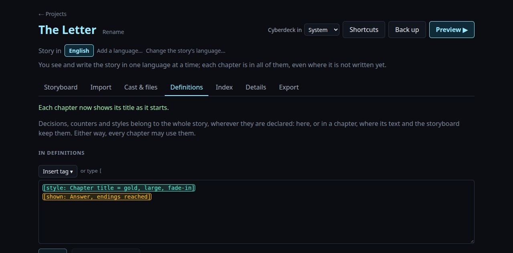
Index lists every decision, counter and memory, with every place it is given a value or tested. Click a place to see the card. At the top, it points out what looks forgotten: a value tested but never given, so that condition can never hold; an ending no path reaches; a memory nobody checks.
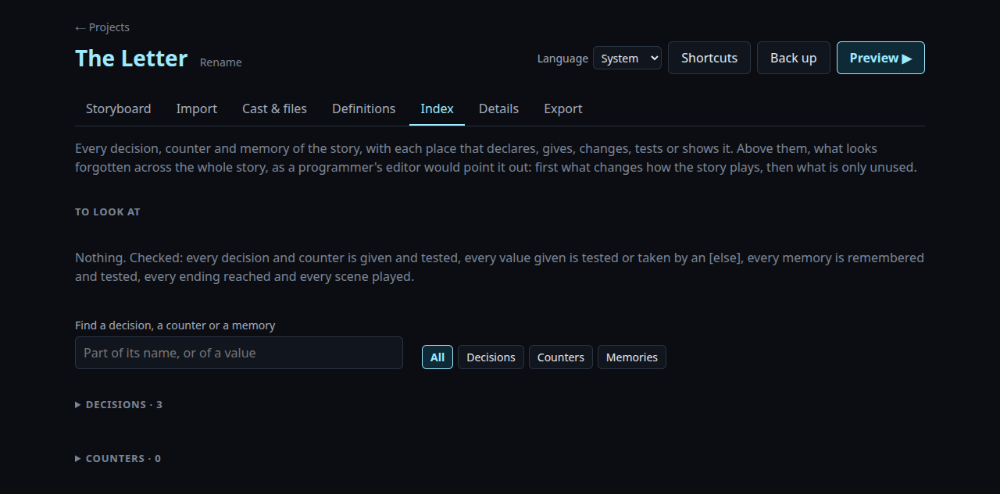
In the storyboard, In this view, under the panel, lists the decisions, counters and memories the cards on screen use. Inside an opened block, it's only that block's.
13. Places to come back to
For a hub the player returns to until they choose to leave, use a [loop]. It plays again and
again until a [break]:
[decision multi: Visited = Wheel | Stand] [loop] [choice: Where] > The big wheel = Wheel [if: Visited is not Wheel] > The candy stand = Stand [if: Visited is not Stand] > Go home = Home [if: Where is Wheel] [set: Visited = Wheel] From the top of the wheel, the whole city shone. [else if: Where is Stand] [set: Visited = Stand] The candy floss stuck to her fingers. [else] [break] [end] [end]
An option followed by [if: …] is offered only while that holds: here, each place disappears
once visited.
14. Scenes: write once, play anywhere
A bad end that can happen in chapter 2 and again in chapter 5 is written once, as a scene, and played wherever you need it. After a scene, the story goes on where it was, unless the scene ended it.
# Chapter 2 [if: Answer is Lie] [play: Caught] [end] The guard lets you pass. # Scene: Caught — Guard: Stop right there. [ending: Caught]
In the storyboard, select a [play] card and press Open the scene; the scene's board
says where it is played from, each a link back.
15. Chapters of a route
A chapter that belongs to one route only says so right under its title. Other players pass it by:
# Chapter 3 — Marie's route [only if: Route is Marie]
On the story's level of the storyboard, chapters following one another under the same condition form a route, framed together, the condition written once. In a chapter's panel, Played only if sets its condition; Apply to its route sets it for every chapter of the route at once.
16. Characters on stage
| You write | What happens |
|---|---|
[enter: marie right smile] | Where she stands and how she looks. Places: far-left, left, center, right, far-right, or 35% of the width. |
[move: marie center] | She walks over. |
[enter: jules slide-from-right 0.8s wait] | He slides in; wait holds the text until he arrives. |
[exit: marie fade 1.5s] | She fades out slowly. |
[enter: marie near], far | Closer (larger, in front) or further away. |
[enter: marie facing-left] | Which way she looks. By default characters look towards the middle. |
In Cast & files, tell Cyberdeck which way each character was drawn looking, and it
turns them the right way. Drawn from the waist up, as most Japanese visual novels draw them? Choose
upper body there, for all your characters or for one: they are drawn taller than the screen, the
head near its top, and near zooms on the face.
17. Sounds, voices, videos and screen effects
| You write | What happens |
|---|---|
[sound: door] | A sound plays once. Its file is named after it: door.ogg. |
[voice: marie-01]— Marie: Hello. | Marie's line is heard: marie-01.ogg. It stops when the player moves on, and plays again if they come back to the page. |
[video: Opening] | A video fills the screen, and the text waits until it ends. Clicking or pressing Space passes it. Captions go in a file named like it, Opening.vtt. |
[transition: fade] | The next background fades in. Also black or white, with a duration: [transition: black 1.5s]. |
[shake], [shake: strong] | The screen trembles. |
[flash: red] | A flash of colour. |
[fade out: 1s] … [fade in: 1s] | The screen goes black (or white), the text showing over it. |
[tint: sepia], night, grey, none | Colours the whole picture, for a memory or a night. |
Inside a sentence, a sound, shake or flash plays when the text reaches it.
18. How the text looks
Give a style a name and what it looks like, then use it inside the text:
[style: Whisper = italic, small, grey] — Marie: [style: whisper]Don't tell anyone.[style: none] Promise?
The looks to pick from: italic, bold, small, large,
grey, red, blue, green, gold,
shaking, and three that appear as the text is typed: fade-in, rise,
glow. One alone needs no name: [style: italic]. Italics in a Word document
are kept.
For anything else, Definitions takes CSS. Each class is a style:
.ghost {
color: #8af;
text-shadow: 0 0 6px #8af;
}
…and [style: ghost] draws it. For a font of your own, drop its file (.woff2,
.ttf…) in Cast & files, then name it: font-family: "Cinzel".
The game carries it to your players. Only how text looks is kept. Anything that would load a file,
or touch the player's own buttons, is left out, and the tab says what and why. Text in a larger style
is cut into shorter pages, so it always fits the box.
Title cards, in Definitions, show each chapter's title over the stage as it starts. Give
them a look with a style named chapter title, and the ending's name with one named
ending.
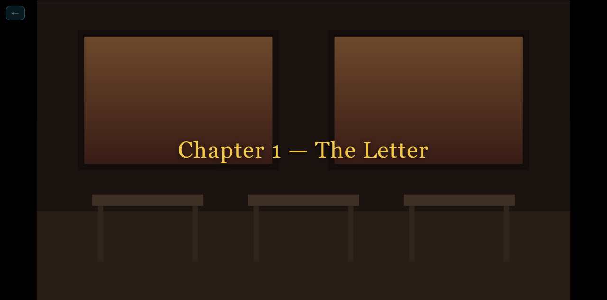
For long narration, [text: full] writes over the whole screen, as in a book, the pages
piling up until [clear]. [text: box] brings the text box back.
19. Illustrations and the gallery
[illustration: Sunrise] … [illustration: none]
A full-screen picture of a key moment. Players find the ones they have seen in the game's Gallery, in their library; the others stay locked.
20. Working in Word
You can write your whole story in Word and open the .docx in the Import tab. Titles in
the “Heading 1” style become chapters. A dialogue line that Word turned into a bulleted list is still dialogue.
To edit in Word again later, Export as text (in a chapter's panel, on the story's level) writes the
story back with every change you made in Cyberdeck. Import it again, and Cyberdeck chooses
In place of a chapter by itself, for the chapter of the same title: its first line,
[import: chapter], says it is one. The chapter keeps its place, and players' saves inside it
keep working.
Exported as is, each page is a paragraph, so that it comes back cut the same. To send a text to a translator, choose As written under Paragraphs, in the Export tab: the pages cut from one paragraph are joined again, and the text reads as you wrote it.
21. Tree view, shortcuts and backups
The grid keeps each block folded, to see the whole chapter at a glance and move things around. The storyboard's Tree view unfolds everything instead: one card per line, the branches of each block side by side, to follow how the story goes. Here is the fair of chapter 2 in both views.
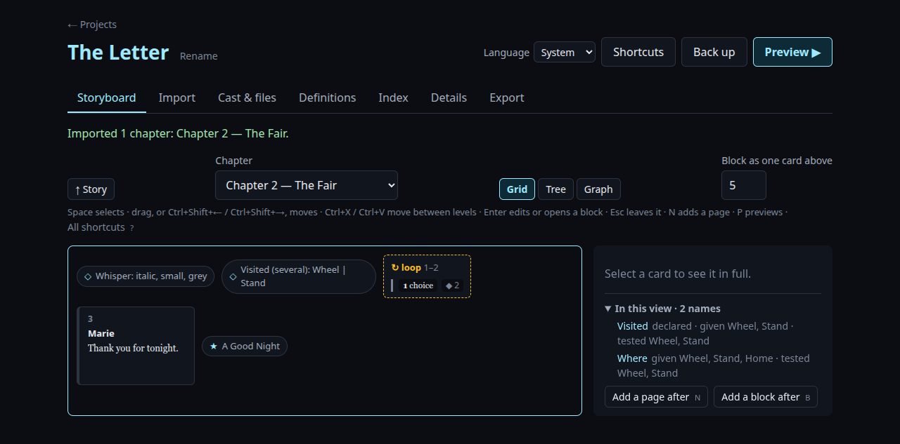
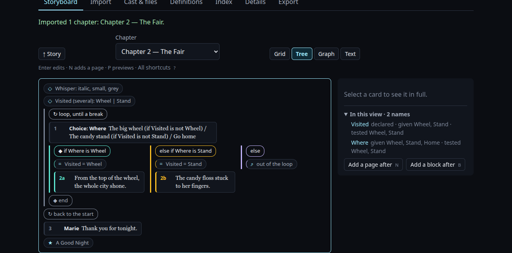
The Text view shows the chapter, or the block you opened in the grid, as the text it imports from. Edit it like a Word document, then Save: no need to export and import again for a few lines.
The Graph view draws the whole story as a map: chapters one under the other, blocks
forking into their branches and joining again, endings where routes stop, and scenes on the side, linked
to each [play] that calls them. Drag it to move around, use the wheel to zoom, and click a box:
its panel opens it in the grid, adds a branch to a block or an option to a choice, or moves a branch.
From the keyboard, Tab goes from box to box, bringing each into view, and Enter selects the one reached and moves to its panel, where Tab goes through its buttons; Esc comes back to the box. On the map itself, the arrows move it around, and + and − zoom in and out.
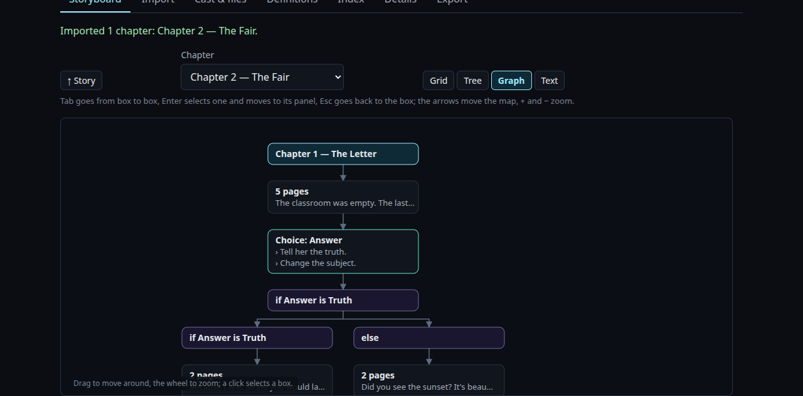
Shortcuts (or ?) lists every key by screen; click one to change it.
Back up downloads your whole project as one file. Restore a backup…, on the projects screen, brings it back, on this computer or another. Do it now and then. Lost your project, but still have your game? Give the game's file to the same button: the project comes back from it, with all the chapters the game carried.
22. What your players see
Players have their own Settings, in three categories. General: text speed, volumes (music and videos, sounds, voices), the speed of auto mode, full screen. Accessibility: larger text, a plainer font, a stronger contrast, pages read aloud, choices that wait for them, captions on videos, and a name over the text box that slides to who speaks, jumps there, or stays put. Players with a screen reader hear each page whole as it appears. Controls: their own keys. They open them in a game, or from their library, before playing; a game can have its own, from its card, a slower text for one, a louder music for another. You have nothing to do for any of it: it works in every game.
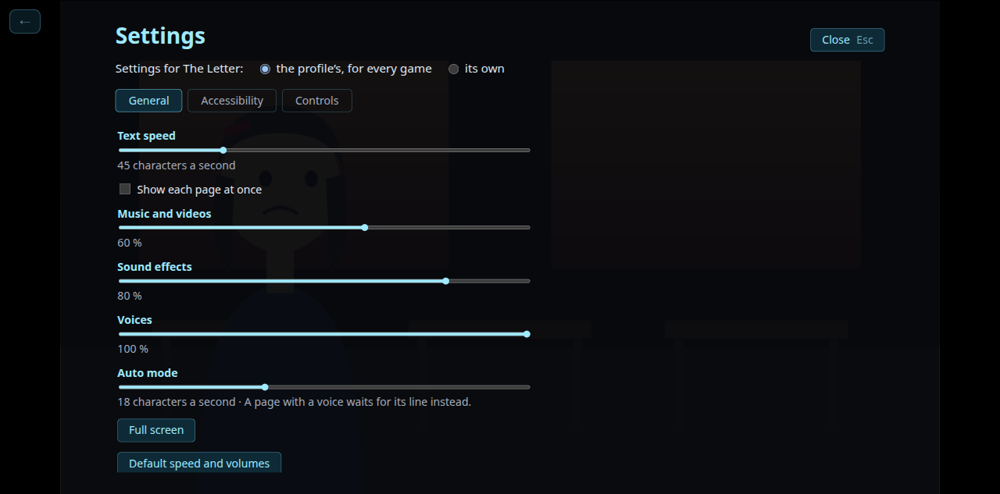
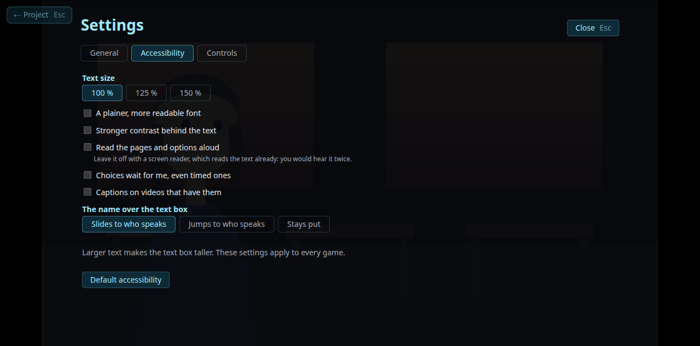
The Log shows what they read and picked. Clicking a line goes back to it. The Journal (J) shows what you chose to let them see (see section 10). A game in several languages asks which one, on its card in the library: Play in.
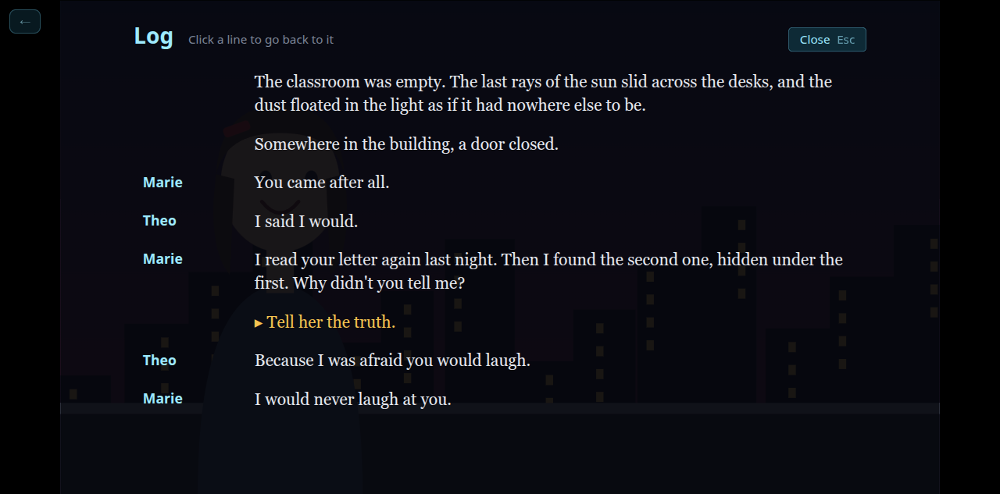
The game saves at every page. Save and Load add six slots, and Save to a file keeps a save as a file, to put aside or to carry to another computer. There, Load a save or progress… in the library opens it, if the game is installed. Their progress (endings, map, gallery) goes with them the same way: Progress to a file, on the game's card. Each save shows a small picture of the stage as it was. The Map shows each choice they have reached and where each option led, so that they can try another from there; hovering a choice tells what their journal showed then.
Auto ▶ moves on by itself: a page with a voice waits for its line, another for the time it takes to read it. Any key or click takes over again.
The look of the text box and of the names is yours to set, too. Images named text-box.png and
name-plate.png, dropped in Cast & files, frame them, stretched by their edges so that their corners
stay whole: a floral border, for instance. In the CSS, .text-box and .name-plate change
their colours, borders and shadows, and a class named after a character, .marie, her plate alone; or
give her name a colour in Cast & files. In the preview, State shows what the story holds on
the page shown: each decision, counter and name, what is remembered.
23. The player's name, and timed choices
To let players name the hero, ask for it, then write the name between braces wherever it goes:
[ask: Hero = Alex]
— {Hero}: So that's my name.
Marie looked up. “{Hero}? Is that you?”
The story stops on a small box to type the name, at most 12 letters. Alex stands in until
they give one, or if they leave it empty.
A choice can have a time limit. Write it after its name, and end one option with [timeout]:
it is what happens when time runs out. Players see it among the others, the time running out along it,
so they know what waiting means, and can pick it without waiting.
[choice: Answer 10s] > Tell her the truth. = Truth > Lie. = Lie > … = Silent [timeout]
Any option can be it: with > Yes. = Accept [timeout], waiting means yes.
Players who need more time can ask choices to wait for them, in their settings: nothing is then taken by itself.
24. Values in the text, and chance
Braces show a value the story keeps: a counter, a decision, a name the player gave.
[counter: Hour = 8]
[decision multi: Clues = Letter | Key]
It is {Hour} o'clock. In your pocket: {Clues}.
A decision shows its values, separated by commas. A name that means nothing to the story is reported
when you import, so a typo never shows; one name means one thing, so a name asked of the player cannot
also be a counter's. To write a brace itself, double it: {{.
For a counter, [set: Weather = random 1 6] draws a number between the two, so that the same
choices may lead elsewhere. A save keeps what was drawn, and going back draws the same again.
25. Translating your story
A translation lives in the same project, beside your story: the same chapters, pictures and sounds, the same decisions, its own text. Say which language a text is in on its first line, with its standard code, and import it as usual:
[import: story fr] # Chapitre 1 — La Lettre …
Or pick it under Language of the text, in the Import tab, by its name or its code. A
whole story, [import: story fr], lays its chapters over yours, in order: its first chapter is your
first chapter in French. Chapters imported on their own fill the first places not translated yet, and the
Import tab says which before you import; to put one elsewhere, choose In place of a chapter.
A chapter not translated yet shows hollow on the story's level, your title standing in.
Scenes go by their name, which stays as it is, as the tags do: [bg: rooftop], [enter:
marie], the names of decisions and their values. What players read of an ending can be translated:
[ending: The Empty Room = La Chambre vide]
Story in, at the top of the project, shows the story in one language at a time; Add a language… begins another, and Remove this language takes one out again while it has no text. While your story has only one language, Change the story's language… sets it right, if Cyberdeck guessed wrong. In the Export tab, tick the languages players get: one with a hollow chapter cannot go yet, and the tab says which chapter it lacks. Exporting the story as text writes its language on the first line, so that a translator's version comes back as one.
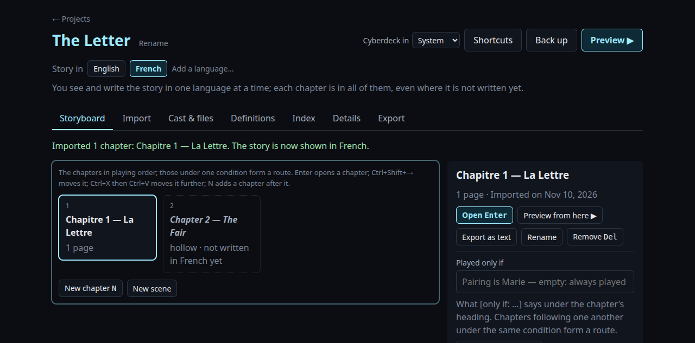
26. Recipes for bigger stories
A few ways to put the pieces together, for stories that branch more than once.
Routes that meet at the end
Each route is a run of chapters under its own condition; the epilogue has none, so every route
reaches it, and its own [if] says goodbye in each one's way.
# Chapter 3 — Marie [only if: Route is Marie] … # Chapter 3 — Jules [only if: Route is Jules] … # Epilogue [if: Route is Marie] — Marie: Same time next year? [else] — Jules: Don't be a stranger. [end] [ending: Together]
Affection deciding the route
A counter per character, raised by the options that please them, then read once, where the route starts:
[choice: Gift] > Flowers = Flowers [add: Marie] > A book = Book [add: Jules] … [if: Marie >= 3] [set: Route = Marie] [else] [set: Route = Jules] [end]
A hub where time runs out
A loop around a choice, a counter for the hour, and a way out when it is late:
[counter: Hour = 18]
[loop]
[if: Hour >= 22]
The fair is closing.
[break]
[end]
[choice: Where]
> The big wheel = Wheel
> The candy stand = Stand
[add: Hour]
It is now {Hour} o'clock.
[end]
A choice that remembers
A [decision multi] keeps each option picked; an [if] after an option hides the
ones already taken, as in the fair above.
An ending for those who saw the others
What the player has seen stays with their profile from one playthrough to the next. A true ending can wait for both routes:
[if: seen ending Marie's Ending and seen ending Jules's Ending] [play: The Truth] [end]
Scenes as pieces to reuse
A scene can be played by many chapters, and test the story itself: one morning scene for every day, its lines changing with what happened.
# Scene: Morning [bg: kitchen] [if: Hour >= 9] — Mum: You're late again. [else] — Mum: Breakfast is ready. [end]
A second playthrough
[remember] marks what the profile keeps for good. Later, [if: remembered …] lets a
character notice:
[if: remembered The ghost's name] — Ghost: You came back, and you know my name. [end]
What the game knows, and what the player carries
A character can notice the player went back, because a memory stays whatever they take back:
[remember: Saw the letter] … [if: remembered Saw the letter] — Marie: You read it, didn't you? Even if you pretend you didn't. [end]
A key found in one playthrough can be there in the next, with a lasting decision, and gone once used:
[decision multi lasting: Bag = Key | Lamp] [shown: Bag] … [set: Bag = Key] … [if: Bag is Key] The door opens. [unset: Bag = Key] [end]
Money that adds up over playthroughs is a lasting counter, [counter lasting: Coins = 0], and
[add: Coins 10]. A promise broken for good is a memory forgotten: [forget: Promised to
stay].
Waiting as an answer
Silence that means yes:
[choice: Stay 8s] > I'll stay. = Yes [timeout] > I have to go. = No
A journal that opens up
Show little at first, and more once the player has seen an ending, for those hunting the others:
[shown: Bag] [shown after an ending: Trust, endings reached]
A story in two languages
Write it in your language, then lay the translation over it, chapter by chapter, as section 25 shows. Ship it once every chapter has its translation: players pick their language on the game's card.
A little chance
A random draw lets the same choices lead to different evenings:
[counter: Weather] [set: Weather = random 1 6] [if: Weather >= 5] [bg: rain] It started to pour. [end]
The Graph view of the storyboard is the place to check the whole: every route, where it forks, where it ends.